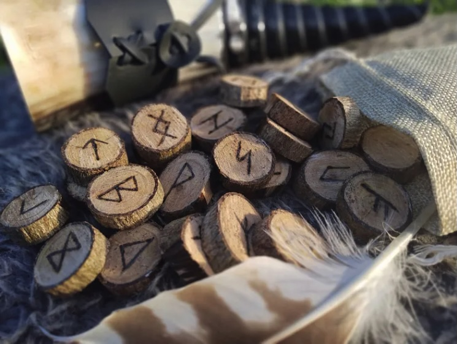

April 22, 2025
Link. This article originally appeared on Books Are Our Superpower, Medium.

Speak Friend and Decode
How 8-Year-Old Me Cracked the Moon Runes Before Second Breakfast
When I was eight years old, I received my very own copy of The Hobbit. I opened the cover, and there was a treasure map! A real map, right there in my new book! I was hooked from the very first moment.
The Runes
Problem was, I couldn't read it. The map displayed strange letters I'd never seen before. In the middle of the map of Middle Earth was a block of runes:
I read the preface. (Yes, I was that kind of kid.) After a first paragraph that made the somewhat pedantic distinction between “dwarvish” over “dwarfish,” old man Tolkien finally dove into the good stuff. He said, “Runes were old letters originally used for cutting or scratching on wood, stone, or metal, and so were thin and angular…” That was more like it. He continued, “If the runes of Thror's Map are compared with the transcriptions into modern letters (on page…)”
I flipped to the indicated page and saw the English translation: “Stand by the grey stone when the thrush knocks. The setting sun will shine on the keyhole with the last light of Durin's Day.”
I had no idea who Durin was, but who cared? There was valuable treasure on the line!
How to Solve the Runes
I had solved some cryptograms in the Invisible Ink puzzle books, so I knew what to do. Use this block of runes to match symbols to letters. Once I cracked that, I'd have a key to unlock other messages, like the second, smaller inscription on the map. Once I had the key, I could make my own secret messages.
I went through the inscription word by word, keeping track of which runes matched which letters. From the very first word, I got S, T, A, N, and D. My dad's name was Stan! There he was, hiding in plain sight at the start of the message. That had to be a good sign.
From the second word, I got B and Y. Simple enough. The third word was trickier. “The” had three letters, but there were only two runes. Hmm. I pressed on.
From the fourth word, I picked out G, R, E, and Y. Aha! If the rune that looked like an ‘M' stood for E, that weird thorn-shaped symbol had to be “TH.”
I continued decoding the message, letter by letter, until I had nearly the whole alphabet. Eventually I had the key!
TODO: Insert pic The Key to the Runes!A little messy, but usable. My alphabet was missing J, M, Q, V, X, and Z but who cared? Unless I needed to write, “Jazmin mixed quinoa with extra vanilla and zest,” or spell my own name, I was golden.
More Secret Runes to Solve
Now we can solve other messages written in Dwarfish runes!
There's another inscription on the map. The solution is given in the text, but for fun, see if you can solve it. Most of the characters are in the key, but there are some new ones, too.
TODO: Insert pic The Map's Other InscriptionAnother message was encoded on the cover of the book. Another Christmas, I got the Lord of the Rings poster, which has even more messages!
A Secret Code of Our Own
Best of all, now my buddies and I could communicate in secret code! We set up secret meeting places (the gym after school), gave out the pass phrase (“trolls have bad breath”), and spilled critical intel every kid needs to know (“mystery meat is made of ogres'). We made our own fellowship, armed with pencils, paper, and the secret knowledge of runes.
Conclusion
As an adult, this exercise is trivial. There's a set of alphabet symbols and the key is more or less given to you. But as a kid, it was magical! I unlocked the secrets of “ancient” runes and, perhaps more importantly, my curiosity.